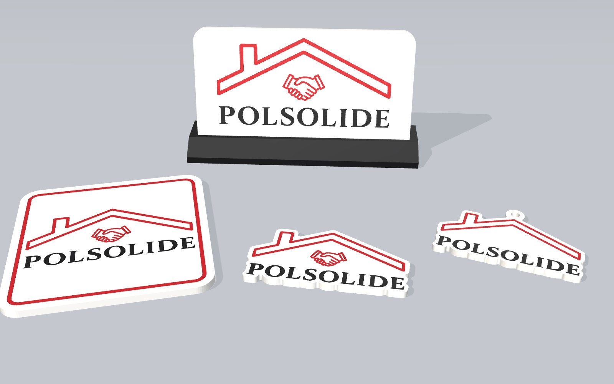

Brelok do kluczy
Dla klientów, którzy odbierają klucze do mieszkania albo domu. Dach i napis z logo, ucho na kółko nad kalenicą.
- Wymiar
- 74 × 47 × 3,5 mm
- Otwór
- Ø 4,6 mm
- Filament
- ≤ 10 g
białyczerwonyczarny
Cztery gadżety z logo, zaprojektowane do druku 3D w trzech kolorach. Każdy model poniżej można obracać i przybliżać, a numerowane punkty pokazują szczegóły wykonania.

Kliknij punkt na modelualbo jedną z cech powyżej.
Dla klientów, którzy odbierają klucze do mieszkania albo domu. Dach i napis z logo, ucho na kółko nad kalenicą.
Kliknij punkt na modelualbo jedną z cech powyżej.
Pełne logo z uściskiem dłoni i czerwoną ramką. Na biurko w biurze i jako upominek dla klienta.
Kliknij punkt na modelualbo jedną z cech powyżej.
Logo wycięte po obrysie. Z tyłu dwa gniazda na magnesy neodymowe 10 × 2 mm, wklejane po wydruku.
Kliknij punkt na modelualbo jedną z cech powyżej.
Tabliczka z pełnym logo wsuwana w czarną stopkę odchyloną o 12°. Na recepcję, biurko lub stoisko.